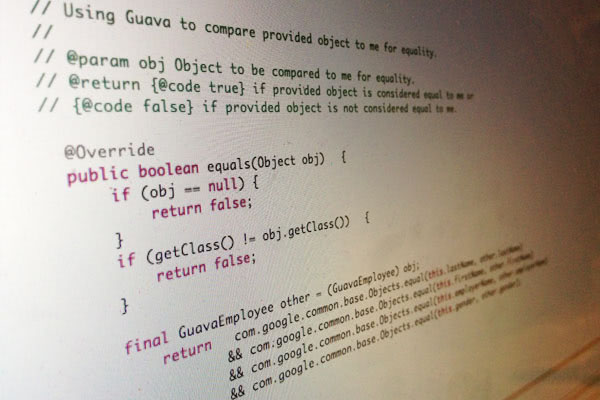

回 CodeData 專欄
專欄文章：Guava 教學

大多數開發者對
Guava
的認識，是從其中對Java 標準 API 中 Java Collections 框架功能的增強或補充開始，那是 guava-libraries 中的一部份，也就是 Guava Collections，在這部份，Java Collections 框架參與者之一 Joshua Bloch 也曾對其提出相關建議。然而 guava-libraries 不僅僅是 Collections 的功能加強版，它還包括了許多進階特性，甚至有不少設計是借鏡了函數式程式設計的概念，像是不可變動結構、避免 null 等，對不少 Java 傳統開發者而言，這些概念都是新穎而陌生的，也因此無法對其作更進一步的善用。
Guava 教學
這邊整理原發表於
CodeData
的
Guava 教學
系列 …
【Guava 教學】（1）從避免使用 null 開始
【Guava 教學】（2）命名明確的條件檢查
【Guava 教學】（3）高階排序概念的實現
【Guava 教學】（4）實作 toString、equals 與 hashCode 的幫手
【Guava 教學】（5）程式 90% 比率在管理與處理錯誤
【Guava 教學】（6）不可變群集
【Guava 教學】（7）Multiset、Multimap 與 BiMap
【Guava 教學】（8）你需要的其實是範圍（Range）？
【Guava 教學】（9）ListenableFuture 聽取未來需求
【Guava 教學】（10）進行函數式程式設計